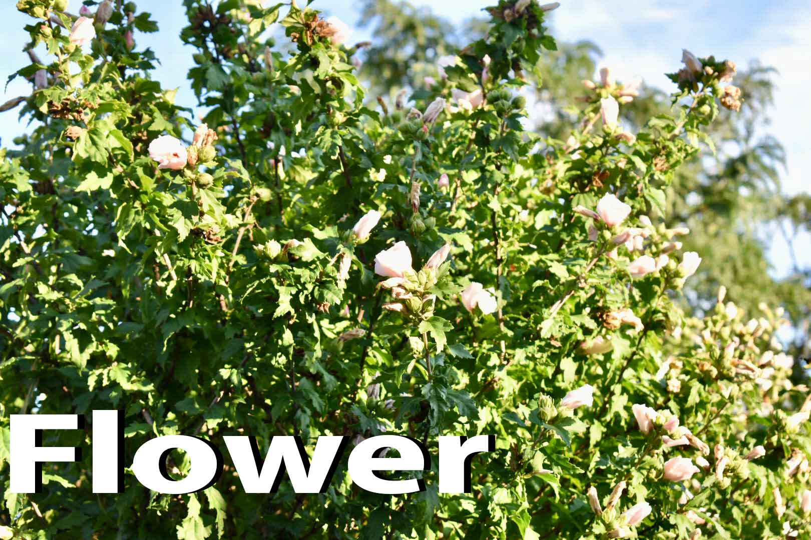
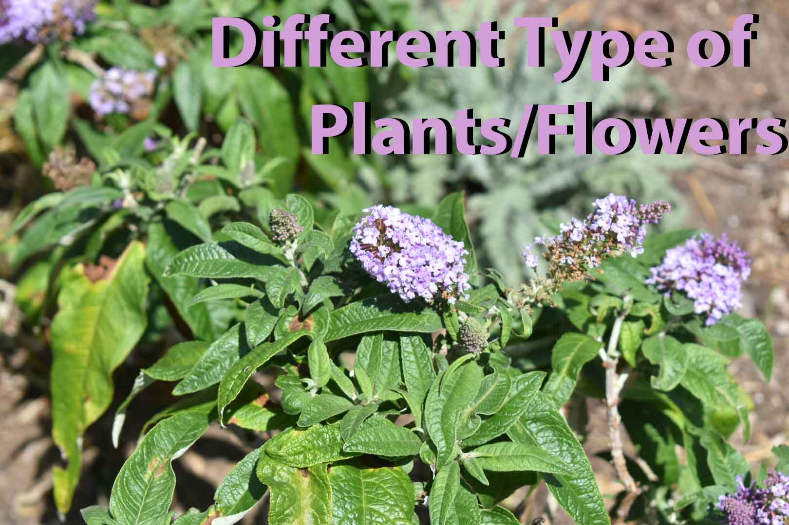
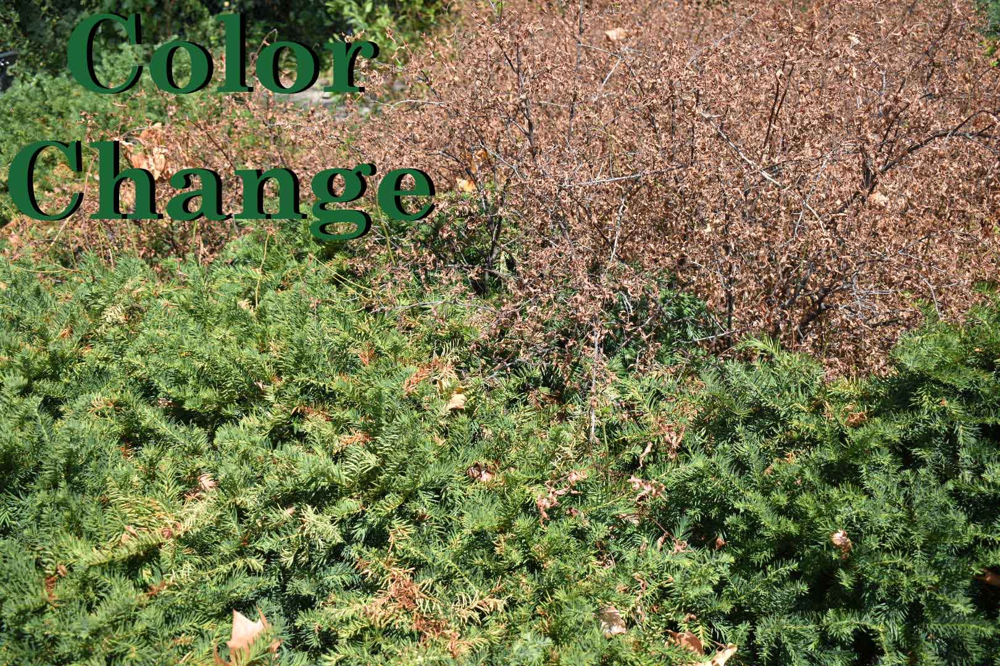
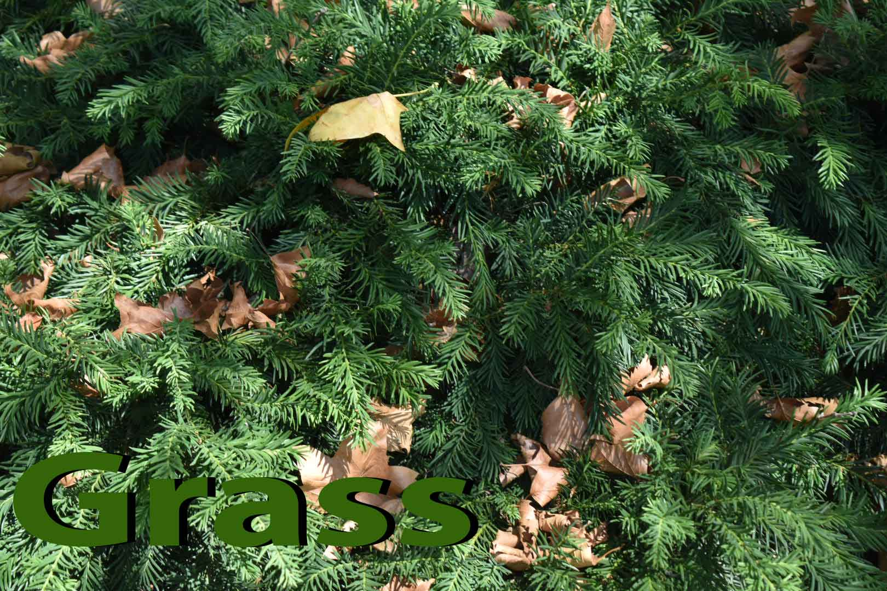

For this assignment I had to create an automated photo essay. Possible topics selection was Summer in the City, Subway Infrastructure, NYC Street Food or find my own subject. I decided to do a plant themed photo essay so I went explore areas taking pictures of plants.